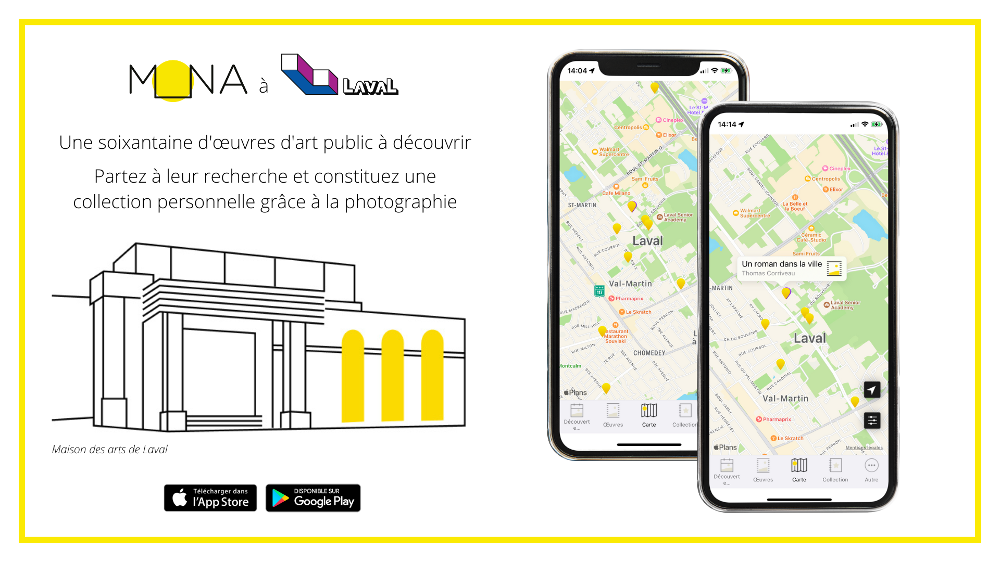

Ateliers Wikipédia
Depuis 2023, la Maison MONA développe une expertise sur la question de la découvrabilité et du rayonnement des artistes en arts visuels au Québec sur les plateformes de la fondation Wikimédia. C’est d’abord dans le cadre du projet Vers un commun numérique de l'art public (subventionné par le Conseil des arts du Canada) que l’équipe collabore avec une dizaine de créateur·trice·s en art public du Québec et des centres d’artistes autogérés, afin d’améliorer la présence en ligne des artistes visuels québécois·es. Afin de partager son expérience sur Wikidata (données liées), Wikimédia Commons (répertoire d’images) et Wikipédia (encyclopédie libre), la Maison MONA propose dorénavant des activités d’initiation et de contribution à ces plateformes destinées aux centres d’artistes et aux institutions culturelles.

Atelier Wiki à Sporobole, octobre 2024
Ces ateliers s’adressent tant aux employé·e·s des organismes qu’aux artistes, aux chercheur·e·s, aux professionnel·le·s de la culture et au grand public. D’une durée de 3 h, l’activité est composée en deux parties : une présentation générale sur le fonctionnement de l’univers Wikimédia, et particulièrement Wikipédia (environ 1 h 30) et un atelier pratique de contributions (1 h à 1 h 30 selon le groupe).
Télécharger une version PDFLes objectifs des ateliers sont les suivants :
- Sensibiliser les acteur·rice·s du milieu aux enjeux de visibilité, de découvrabilité et d’autodétermination en ligne sur les différentes plateformes Wikimédia.
- Former le milieu culturel à l’édition wikipédienne afin de favoriser son autonomie.
- Générer un nouvel écosystème de rédacteur·trices du milieu culturel québécois qui pourront, dans le futur, collaborer et s’entraider sur les plateformes Wikimédia.
Quels sont les avantages pour une institution culturelle à organiser la tenue d’un atelier ?
Ce type d’atelier contribue aux missions institutionnelles d’accroître la visibilité et la découvrabilité de leurs collections. En effet, Wikipédia fait partie des 10 sites les plus consultés au monde. La présence et les contributions du milieu culturel sur ces plateformes sont également à l’origine d’une augmentation importante des consultations des sites webs, pour les artistes comme pour les institutions et leurs collections.
Si la BAnQ, la Cinémathèque québécoise et le MNBAQ ont été des précurseurs pour améliorer le rayonnement de nos artistes sur Wikimédia, nous œuvrons aujourd’hui à assurer une participation plus diversifiée au sein du milieu culturel, et particulièrement à l’extérieur de Montréal. Cet atelier permet aux organismes culturels de découvrir ces plateformes participatives, et éventuellement, de s’impliquer au sein de ce chantier en constante évolution. Il s’agit de constituer collectivement une vision à long terme, en s’inscrivant dans un processus de formation continue et en développant des initiatives avec les écosystèmes locaux.
Coût
Le prix pour un atelier de 3 h animé par deux médiatrices est fixé à 800 $ + tx, ainsi que les frais de déplacement.
Compléments à l’atelier :
- Création d’un état des lieux sur les artistes de la collection. L’estimation du nombre d’heures de travail dépend du nombre d’artistes ainsi que des plateformes à privilégier.
- Préparation de pages de brouillon pour des artistes sélectionnés qui n’ont pas encore de page Wikipédia. Ceci inclut les recherches préliminaires, la rédaction d’un brouillon avant l’atelier, la finalisation et la publication des pages après l’atelier. (12 h par artiste)
Le tarif pour les compléments est à 60 $/h. Dans le cas d’une entente de collaboration plus étendue, il est possible d’appliquer un rabais sur ce tarif.
Prérequis pour l’organisation d’un atelier
- Ordinateur portable pour les participant·e·s.
- Salle pouvant accueillir une quinzaine de personnes dotée d’une bonne connexion wifi et d’un écran de projection.
Ateliers et formations sur mesure
Nous prévoyons de diversifier les formats (durée, plateforme visée) de ces ateliers. Nous pouvons également adapter cette offre aux besoins spécifiques d'une institution ou d'un regroupement. Contactez-nous pour en savoir plus : info@monamontreal.org.
Offre aux institutions culturelles
La Maison MONA offre des services d'accompagnement en création et structuration de données culturelles aux institutions culturelles québécoises. Nous sommes spécialisé·e·s dans le traitement de données de collections patrimoniales ou de collections d'art visuel, particulièrement dans la gestion des données en art public.
Ces services incluent notamment :
- Structuration d'information en données : inventaires d'œuvres d'art public ou de lieux patrimoniaux par exemple
- Réconciliation des valeurs en données liées
- Publication de données ouvertes
- Diffusion et valorisation des données dans l'application MONA
- Conception d'activités de médiation in situ
- Production de kits pédagogiques
- Co-création de carte avec un·e artiste
- Production de rapports de réception des publics
Consulter les projets déjà réalisés

Services de consultation
Les professionnel·le·s de la Maison MONA partagent leur expertise sous la forme de services de consultation.
- Accompagnement en muséologie et en médiation numérique
- Structuration et sémantisation de données culturelles
- Création de contenus pédagogiques et de médiation
- Recherche qualitative et quantitative en art et patrimoine
- Cartographie et visualisation interactives de données

Nous avons notamment collaboré avec la TOHU pour concevoir une nouvelle version de l'application mobile du parc Frédéric-Back.
La conception de nouvelles interfaces et interactions avait pour but d'intégrer des contenus de médiation faisant connaître les richesses du site.